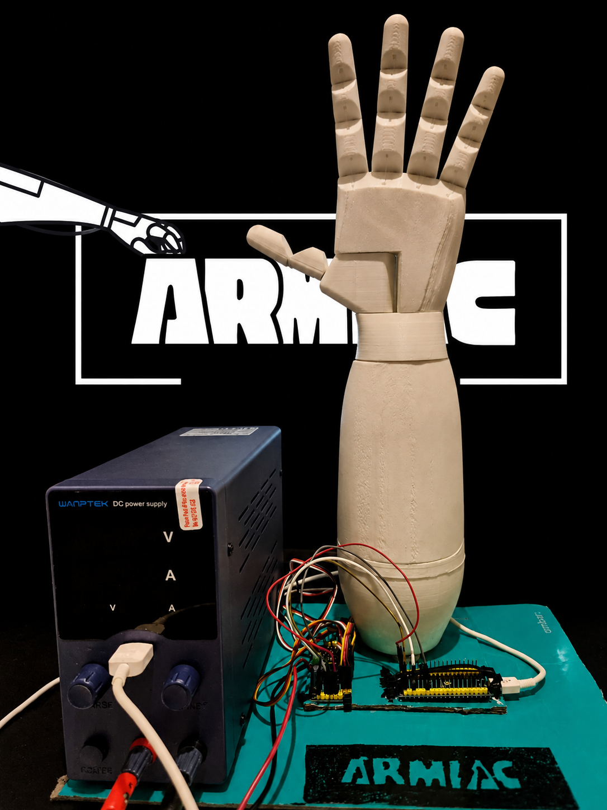

Sobre o projeto
O ARMIAC integra desenvolvimento móvel, sistemas embebidos, eletrónica, redes e fabrico 3D. A app Android envia pedidos HTTP ao ESP32, que comunica por I2C com o PCA9685 e transforma os comandos em sinais PWM para os servomotores.
Protótipo funcional de mão robótica articulada, impressa em 3D e controlada por uma app Flutter através de Wi‑Fi, HTTP e comandos de voz.

O ARMIAC integra desenvolvimento móvel, sistemas embebidos, eletrónica, redes e fabrico 3D. A app Android envia pedidos HTTP ao ESP32, que comunica por I2C com o PCA9685 e transforma os comandos em sinais PWM para os servomotores.
Foi necessário aprender Flutter e Dart, calibrar servos, estabilizar a alimentação, ajustar tendões e peças mecânicas e integrar software com hardware real.
Quero continuar a desenvolver o ARMIAC à medida que existam recursos e financiamento. Para além da sua finalidade educativa, pretendo explorar aplicações ligadas à acessibilidade e à comunicação em ambientes de ensino.